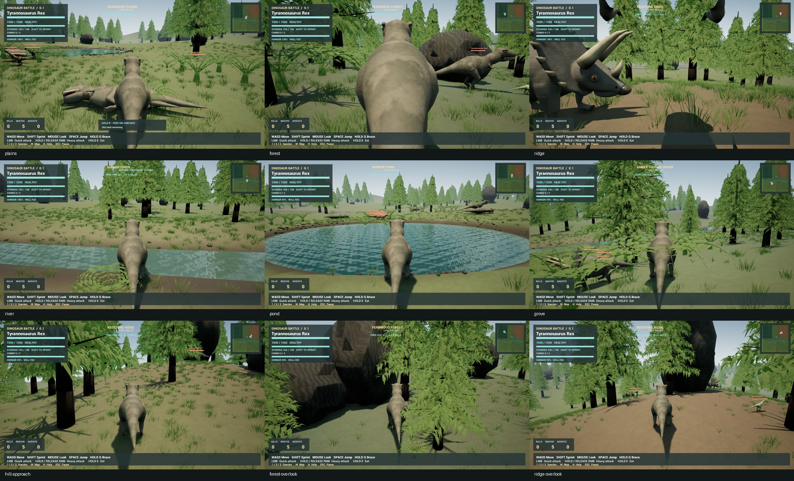
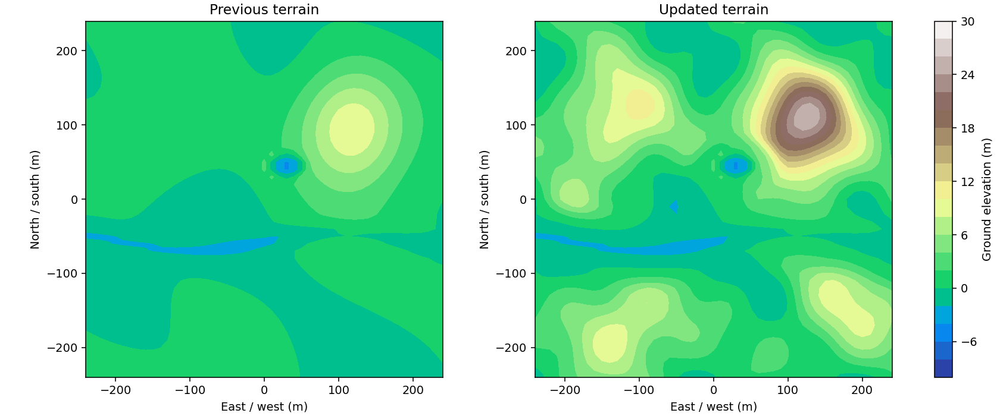

New species voices, denser groves and rolling hills.
Reel order: Step · Quick · Charge-up · Heavy · Impact · Hurt · Sprint breath · Injured breath · Death.
These reels play the designed source clips. Separate packaged-game recordings below include actual game input, spatial mixing and timing. The agent session cannot directly listen; timing, lifetime, levels and clipping are measured.
Raptor pack versus Rex
Raptor pack versus Triceratops


502 trees. Sampled interior high point: 25.64 m; previously 9.61 m. Creek and pond basins are retained.
Credits: rubberduck, Darsycho and trazzz123 (CC0). Full provenance.